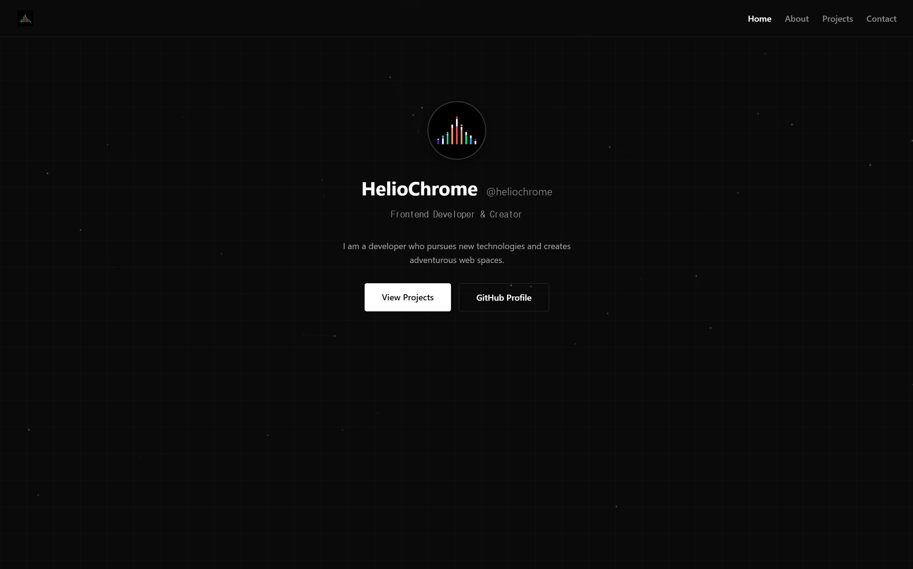

I would like to introduce the work I have produced and documented.

This is a personal portfolio website with minimal dark mode, 3D hovering effects, and a particle background applied.
This is a simple Conway's Game of Life simulation visualizer.